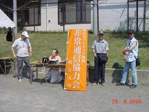
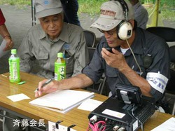

会員募集

当支部では随時、会員を募集しております｡ ボランティア精神をお持ちでアマチュア無線に興味のある方、 特に有資格者の入会をお待ちしております。各防災拠点委員会、防災拠点学校長のご理解により、順次クラブ局を開設しております。このため、局免許がなくともアマチュア無線を運用可能な従事者免許を持っていれば、 支部会員になることで防災拠点の無線機を操作、運用することができます。下記の申込書 (PDF) にダウンロードして記入してください。 この PDF は、Acrobat Reader で開くと、直接文字を記入できます。 記入後はファイル名を付けて保存できますので、 保存した記入後の PDF をお送りください。
入会申込書入会申込書記載例
横浜市アマチュア無線非常通信協力会に入会しよう

日頃、電波という有限の資源を趣味で使用しているアマチュア無線家は、 せめて災害時に所有の無線機器と通信技術を地域のために活用し、 被害縮小に貢献しましょう。会員には何の特典もありません。 逆に多少の負担と労力の提供が必要です。 真にボランティアスピリッツある方の入会をお願い致します。入会についてのお問い合わせは、「お問い合わせ」フォームからご連絡下さい。 担当よりご連絡さしあげます。また、旭区役所総務課を通じて入会することもできます。